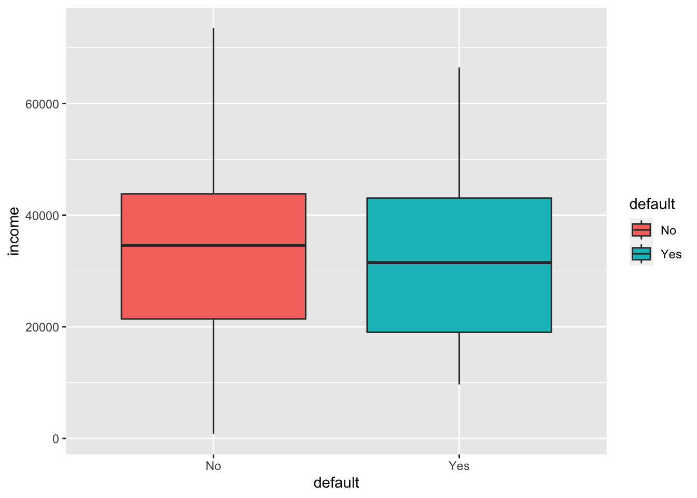
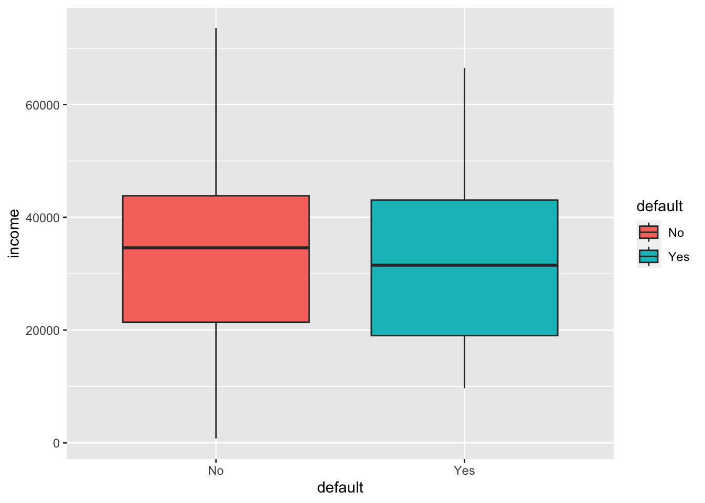

Estimating Logistic Regression Coefficients
1 Descriptive Statistics
head(Default)default student balance income 1 No No 729.5265 44361.625 2 No Yes 817.1804 12106.135 3 No No 1073.5492 31767.139 4 No No 529.2506 35704.494 5 No No 785.6559 38463.496 6 No Yes 919.5885 7491.559
fig <- Default %>% ggplot(aes(x = default))
fig + geom_boxplot(aes(fill = default, y = balance))
fig + geom_boxplot(aes(fill = default, y = income))
Default_stu<-Default %>%
group_by(default, student) %>%
summarise(n_stu = n())
Default_stu %>% ggplot() + geom_histogram(aes(y = n_stu, x= student, fill = default), data = Default_stu,
stat = "identity",position = "dodge") 

2 Estimation
The estimation process is based on the Eq.17 here
Y = as.numeric(Default$default) - 1
X = Default[,3:4]
X = cbind(beta0 = 1, X)
X = as.matrix(X)
N = nrow(Default)
K = ncol(X) # student balance and income
pi = c(table(Y)/N)
betas = matrix(0, K)
W= diag(N)
mu = pi[Y]
nrep = 500
betas.old = betas
for (rep in 1:nrep) {
betas.new = betas.old + solve(t(X) %*% W %*% X) %*% t(X) %*% (Y - mu)
if (abs(betas.new[1]-betas.old[1]) < 0.01) {
print(betas)
break
}
print(betas.new[1])
print(paste0("Repete ", rep, " Times"))
betas.old = betas.new
}[1] -1.05894 [1] “Repete 1 Times” [1] -2.117879 [1] “Repete 2 Times” [1] -3.176819 [1] “Repete 3 Times” [1] -4.235759 [1] “Repete 4 Times” [1] -5.294698 [1] “Repete 5 Times” [1] -6.353638 [1] “Repete 6 Times” [1] -7.412578 [1] “Repete 7 Times” [1] -8.471517 [1] “Repete 8 Times” [1] -9.530457 [1] “Repete 9 Times” [1] -10.5894 [1] “Repete 10 Times” [1] -11.64834 [1] “Repete 11 Times” [1] -12.70728 [1] “Repete 12 Times” [1] -13.76622 [1] “Repete 13 Times” [1] -14.82516 [1] “Repete 14 Times” [1] -15.8841 [1] “Repete 15 Times” [1] -16.94303 [1] “Repete 16 Times” [1] -18.00197 [1] “Repete 17 Times” [1] -19.06091 [1] “Repete 18 Times” [1] -20.11985 [1] “Repete 19 Times” [1] -21.17879 [1] “Repete 20 Times” [1] -22.23773 [1] “Repete 21 Times” [1] -23.29667 [1] “Repete 22 Times” [1] -24.35561 [1] “Repete 23 Times” [1] -25.41455 [1] “Repete 24 Times” [1] -26.47349 [1] “Repete 25 Times” [1] -27.53243 [1] “Repete 26 Times” [1] -28.59137 [1] “Repete 27 Times” [1] -29.65031 [1] “Repete 28 Times” [1] -30.70925 [1] “Repete 29 Times” [1] -31.76819 [1] “Repete 30 Times” [1] -32.82713 [1] “Repete 31 Times” [1] -33.88607 [1] “Repete 32 Times” [1] -34.94501 [1] “Repete 33 Times” [1] -36.00395 [1] “Repete 34 Times” [1] -37.06289 [1] “Repete 35 Times” [1] -38.12183 [1] “Repete 36 Times” [1] -39.18077 [1] “Repete 37 Times” [1] -40.23971 [1] “Repete 38 Times” [1] -41.29865 [1] “Repete 39 Times” [1] -42.35759 [1] “Repete 40 Times” [1] -43.41653 [1] “Repete 41 Times” [1] -44.47547 [1] “Repete 42 Times” [1] -45.53441 [1] “Repete 43 Times” [1] -46.59335 [1] “Repete 44 Times” [1] -47.65229 [1] “Repete 45 Times” [1] -48.71123 [1] “Repete 46 Times” [1] -49.77017 [1] “Repete 47 Times” [1] -50.8291 [1] “Repete 48 Times” [1] -51.88804 [1] “Repete 49 Times” [1] -52.94698 [1] “Repete 50 Times” [1] -54.00592 [1] “Repete 51 Times” [1] -55.06486 [1] “Repete 52 Times” [1] -56.1238 [1] “Repete 53 Times” [1] -57.18274 [1] “Repete 54 Times” [1] -58.24168 [1] “Repete 55 Times” [1] -59.30062 [1] “Repete 56 Times” [1] -60.35956 [1] “Repete 57 Times” [1] -61.4185 [1] “Repete 58 Times” [1] -62.47744 [1] “Repete 59 Times” [1] -63.53638 [1] “Repete 60 Times” [1] -64.59532 [1] “Repete 61 Times” [1] -65.65426 [1] “Repete 62 Times” [1] -66.7132 [1] “Repete 63 Times” [1] -67.77214 [1] “Repete 64 Times” [1] -68.83108 [1] “Repete 65 Times” [1] -69.89002 [1] “Repete 66 Times” [1] -70.94896 [1] “Repete 67 Times” [1] -72.0079 [1] “Repete 68 Times” [1] -73.06684 [1] “Repete 69 Times” [1] -74.12578 [1] “Repete 70 Times” [1] -75.18472 [1] “Repete 71 Times” [1] -76.24366 [1] “Repete 72 Times” [1] -77.3026 [1] “Repete 73 Times” [1] -78.36154 [1] “Repete 74 Times” [1] -79.42048 [1] “Repete 75 Times” [1] -80.47942 [1] “Repete 76 Times” [1] -81.53836 [1] “Repete 77 Times” [1] -82.5973 [1] “Repete 78 Times” [1] -83.65624 [1] “Repete 79 Times” [1] -84.71517 [1] “Repete 80 Times” [1] -85.77411 [1] “Repete 81 Times” [1] -86.83305 [1] “Repete 82 Times” [1] -87.89199 [1] “Repete 83 Times” [1] -88.95093 [1] “Repete 84 Times” [1] -90.00987 [1] “Repete 85 Times” [1] -91.06881 [1] “Repete 86 Times” [1] -92.12775 [1] “Repete 87 Times” [1] -93.18669 [1] “Repete 88 Times” [1] -94.24563 [1] “Repete 89 Times” [1] -95.30457 [1] “Repete 90 Times” [1] -96.36351 [1] “Repete 91 Times” [1] -97.42245 [1] “Repete 92 Times” [1] -98.48139 [1] “Repete 93 Times” [1] -99.54033 [1] “Repete 94 Times” [1] -100.5993 [1] “Repete 95 Times” [1] -101.6582 [1] “Repete 96 Times” [1] -102.7171 [1] “Repete 97 Times” [1] -103.7761 [1] “Repete 98 Times” [1] -104.835 [1] “Repete 99 Times” [1] -105.894 [1] “Repete 100 Times” [1] -106.9529 [1] “Repete 101 Times” [1] -108.0118 [1] “Repete 102 Times” [1] -109.0708 [1] “Repete 103 Times” [1] -110.1297 [1] “Repete 104 Times” [1] -111.1887 [1] “Repete 105 Times” [1] -112.2476 [1] “Repete 106 Times” [1] -113.3065 [1] “Repete 107 Times” [1] -114.3655 [1] “Repete 108 Times” [1] -115.4244 [1] “Repete 109 Times” [1] -116.4834 [1] “Repete 110 Times” [1] -117.5423 [1] “Repete 111 Times” [1] -118.6012 [1] “Repete 112 Times” [1] -119.6602 [1] “Repete 113 Times” [1] -120.7191 [1] “Repete 114 Times” [1] -121.7781 [1] “Repete 115 Times” [1] -122.837 [1] “Repete 116 Times” [1] -123.8959 [1] “Repete 117 Times” [1] -124.9549 [1] “Repete 118 Times” [1] -126.0138 [1] “Repete 119 Times” [1] -127.0728 [1] “Repete 120 Times” [1] -128.1317 [1] “Repete 121 Times” [1] -129.1906 [1] “Repete 122 Times” [1] -130.2496 [1] “Repete 123 Times” [1] -131.3085 [1] “Repete 124 Times” [1] -132.3675 [1] “Repete 125 Times” [1] -133.4264 [1] “Repete 126 Times” [1] -134.4853 [1] “Repete 127 Times” [1] -135.5443 [1] “Repete 128 Times” [1] -136.6032 [1] “Repete 129 Times” [1] -137.6622 [1] “Repete 130 Times” [1] -138.7211 [1] “Repete 131 Times” [1] -139.78 [1] “Repete 132 Times” [1] -140.839 [1] “Repete 133 Times” [1] -141.8979 [1] “Repete 134 Times” [1] -142.9569 [1] “Repete 135 Times” [1] -144.0158 [1] “Repete 136 Times” [1] -145.0747 [1] “Repete 137 Times” [1] -146.1337 [1] “Repete 138 Times” [1] -147.1926 [1] “Repete 139 Times” [1] -148.2516 [1] “Repete 140 Times” [1] -149.3105 [1] “Repete 141 Times” [1] -150.3694 [1] “Repete 142 Times” [1] -151.4284 [1] “Repete 143 Times” [1] -152.4873 [1] “Repete 144 Times” [1] -153.5463 [1] “Repete 145 Times” [1] -154.6052 [1] “Repete 146 Times” [1] -155.6641 [1] “Repete 147 Times” [1] -156.7231 [1] “Repete 148 Times” [1] -157.782 [1] “Repete 149 Times” [1] -158.841 [1] “Repete 150 Times” [1] -159.8999 [1] “Repete 151 Times” [1] -160.9588 [1] “Repete 152 Times” [1] -162.0178 [1] “Repete 153 Times” [1] -163.0767 [1] “Repete 154 Times” [1] -164.1357 [1] “Repete 155 Times” [1] -165.1946 [1] “Repete 156 Times” [1] -166.2535 [1] “Repete 157 Times” [1] -167.3125 [1] “Repete 158 Times” [1] -168.3714 [1] “Repete 159 Times” [1] -169.4303 [1] “Repete 160 Times” [1] -170.4893 [1] “Repete 161 Times” [1] -171.5482 [1] “Repete 162 Times” [1] -172.6072 [1] “Repete 163 Times” [1] -173.6661 [1] “Repete 164 Times” [1] -174.725 [1] “Repete 165 Times” [1] -175.784 [1] “Repete 166 Times” [1] -176.8429 [1] “Repete 167 Times” [1] -177.9019 [1] “Repete 168 Times” [1] -178.9608 [1] “Repete 169 Times” [1] -180.0197 [1] “Repete 170 Times” [1] -181.0787 [1] “Repete 171 Times” [1] -182.1376 [1] “Repete 172 Times” [1] -183.1966 [1] “Repete 173 Times” [1] -184.2555 [1] “Repete 174 Times” [1] -185.3144 [1] “Repete 175 Times” [1] -186.3734 [1] “Repete 176 Times” [1] -187.4323 [1] “Repete 177 Times” [1] -188.4913 [1] “Repete 178 Times” [1] -189.5502 [1] “Repete 179 Times” [1] -190.6091 [1] “Repete 180 Times” [1] -191.6681 [1] “Repete 181 Times” [1] -192.727 [1] “Repete 182 Times” [1] -193.786 [1] “Repete 183 Times” [1] -194.8449 [1] “Repete 184 Times” [1] -195.9038 [1] “Repete 185 Times” [1] -196.9628 [1] “Repete 186 Times” [1] -198.0217 [1] “Repete 187 Times” [1] -199.0807 [1] “Repete 188 Times” [1] -200.1396 [1] “Repete 189 Times” [1] -201.1985 [1] “Repete 190 Times” [1] -202.2575 [1] “Repete 191 Times” [1] -203.3164 [1] “Repete 192 Times” [1] -204.3754 [1] “Repete 193 Times” [1] -205.4343 [1] “Repete 194 Times” [1] -206.4932 [1] “Repete 195 Times” [1] -207.5522 [1] “Repete 196 Times” [1] -208.6111 [1] “Repete 197 Times” [1] -209.6701 [1] “Repete 198 Times” [1] -210.729 [1] “Repete 199 Times” [1] -211.7879 [1] “Repete 200 Times” [1] -212.8469 [1] “Repete 201 Times” [1] -213.9058 [1] “Repete 202 Times” [1] -214.9648 [1] “Repete 203 Times” [1] -216.0237 [1] “Repete 204 Times” [1] -217.0826 [1] “Repete 205 Times” [1] -218.1416 [1] “Repete 206 Times” [1] -219.2005 [1] “Repete 207 Times” [1] -220.2595 [1] “Repete 208 Times” [1] -221.3184 [1] “Repete 209 Times” [1] -222.3773 [1] “Repete 210 Times” [1] -223.4363 [1] “Repete 211 Times” [1] -224.4952 [1] “Repete 212 Times” [1] -225.5542 [1] “Repete 213 Times” [1] -226.6131 [1] “Repete 214 Times” [1] -227.672 [1] “Repete 215 Times” [1] -228.731 [1] “Repete 216 Times” [1] -229.7899 [1] “Repete 217 Times” [1] -230.8489 [1] “Repete 218 Times” [1] -231.9078 [1] “Repete 219 Times” [1] -232.9667 [1] “Repete 220 Times” [1] -234.0257 [1] “Repete 221 Times” [1] -235.0846 [1] “Repete 222 Times” [1] -236.1435 [1] “Repete 223 Times” [1] -237.2025 [1] “Repete 224 Times” [1] -238.2614 [1] “Repete 225 Times” [1] -239.3204 [1] “Repete 226 Times” [1] -240.3793 [1] “Repete 227 Times” [1] -241.4382 [1] “Repete 228 Times” [1] -242.4972 [1] “Repete 229 Times” [1] -243.5561 [1] “Repete 230 Times” [1] -244.6151 [1] “Repete 231 Times” [1] -245.674 [1] “Repete 232 Times” [1] -246.7329 [1] “Repete 233 Times” [1] -247.7919 [1] “Repete 234 Times” [1] -248.8508 [1] “Repete 235 Times” [1] -249.9098 [1] “Repete 236 Times” [1] -250.9687 [1] “Repete 237 Times” [1] -252.0276 [1] “Repete 238 Times” [1] -253.0866 [1] “Repete 239 Times” [1] -254.1455 [1] “Repete 240 Times” [1] -255.2045 [1] “Repete 241 Times” [1] -256.2634 [1] “Repete 242 Times” [1] -257.3223 [1] “Repete 243 Times” [1] -258.3813 [1] “Repete 244 Times” [1] -259.4402 [1] “Repete 245 Times” [1] -260.4992 [1] “Repete 246 Times” [1] -261.5581 [1] “Repete 247 Times” [1] -262.617 [1] “Repete 248 Times” [1] -263.676 [1] “Repete 249 Times” [1] -264.7349 [1] “Repete 250 Times” [1] -265.7939 [1] “Repete 251 Times” [1] -266.8528 [1] “Repete 252 Times” [1] -267.9117 [1] “Repete 253 Times” [1] -268.9707 [1] “Repete 254 Times” [1] -270.0296 [1] “Repete 255 Times” [1] -271.0886 [1] “Repete 256 Times” [1] -272.1475 [1] “Repete 257 Times” [1] -273.2064 [1] “Repete 258 Times” [1] -274.2654 [1] “Repete 259 Times” [1] -275.3243 [1] “Repete 260 Times” [1] -276.3833 [1] “Repete 261 Times” [1] -277.4422 [1] “Repete 262 Times” [1] -278.5011 [1] “Repete 263 Times” [1] -279.5601 [1] “Repete 264 Times” [1] -280.619 [1] “Repete 265 Times” [1] -281.678 [1] “Repete 266 Times” [1] -282.7369 [1] “Repete 267 Times” [1] -283.7958 [1] “Repete 268 Times” [1] -284.8548 [1] “Repete 269 Times” [1] -285.9137 [1] “Repete 270 Times” [1] -286.9727 [1] “Repete 271 Times” [1] -288.0316 [1] “Repete 272 Times” [1] -289.0905 [1] “Repete 273 Times” [1] -290.1495 [1] “Repete 274 Times” [1] -291.2084 [1] “Repete 275 Times” [1] -292.2674 [1] “Repete 276 Times” [1] -293.3263 [1] “Repete 277 Times” [1] -294.3852 [1] “Repete 278 Times” [1] -295.4442 [1] “Repete 279 Times” [1] -296.5031 [1] “Repete 280 Times” [1] -297.5621 [1] “Repete 281 Times” [1] -298.621 [1] “Repete 282 Times” [1] -299.6799 [1] “Repete 283 Times” [1] -300.7389 [1] “Repete 284 Times” [1] -301.7978 [1] “Repete 285 Times” [1] -302.8567 [1] “Repete 286 Times” [1] -303.9157 [1] “Repete 287 Times” [1] -304.9746 [1] “Repete 288 Times” [1] -306.0336 [1] “Repete 289 Times” [1] -307.0925 [1] “Repete 290 Times” [1] -308.1514 [1] “Repete 291 Times” [1] -309.2104 [1] “Repete 292 Times” [1] -310.2693 [1] “Repete 293 Times” [1] -311.3283 [1] “Repete 294 Times” [1] -312.3872 [1] “Repete 295 Times” [1] -313.4461 [1] “Repete 296 Times” [1] -314.5051 [1] “Repete 297 Times” [1] -315.564 [1] “Repete 298 Times” [1] -316.623 [1] “Repete 299 Times” [1] -317.6819 [1] “Repete 300 Times” [1] -318.7408 [1] “Repete 301 Times” [1] -319.7998 [1] “Repete 302 Times” [1] -320.8587 [1] “Repete 303 Times” [1] -321.9177 [1] “Repete 304 Times” [1] -322.9766 [1] “Repete 305 Times” [1] -324.0355 [1] “Repete 306 Times” [1] -325.0945 [1] “Repete 307 Times” [1] -326.1534 [1] “Repete 308 Times” [1] -327.2124 [1] “Repete 309 Times” [1] -328.2713 [1] “Repete 310 Times” [1] -329.3302 [1] “Repete 311 Times” [1] -330.3892 [1] “Repete 312 Times” [1] -331.4481 [1] “Repete 313 Times” [1] -332.5071 [1] “Repete 314 Times” [1] -333.566 [1] “Repete 315 Times” [1] -334.6249 [1] “Repete 316 Times” [1] -335.6839 [1] “Repete 317 Times” [1] -336.7428 [1] “Repete 318 Times” [1] -337.8018 [1] “Repete 319 Times” [1] -338.8607 [1] “Repete 320 Times” [1] -339.9196 [1] “Repete 321 Times” [1] -340.9786 [1] “Repete 322 Times” [1] -342.0375 [1] “Repete 323 Times” [1] -343.0965 [1] “Repete 324 Times” [1] -344.1554 [1] “Repete 325 Times” [1] -345.2143 [1] “Repete 326 Times” [1] -346.2733 [1] “Repete 327 Times” [1] -347.3322 [1] “Repete 328 Times” [1] -348.3912 [1] “Repete 329 Times” [1] -349.4501 [1] “Repete 330 Times” [1] -350.509 [1] “Repete 331 Times” [1] -351.568 [1] “Repete 332 Times” [1] -352.6269 [1] “Repete 333 Times” [1] -353.6859 [1] “Repete 334 Times” [1] -354.7448 [1] “Repete 335 Times” [1] -355.8037 [1] “Repete 336 Times” [1] -356.8627 [1] “Repete 337 Times” [1] -357.9216 [1] “Repete 338 Times” [1] -358.9806 [1] “Repete 339 Times” [1] -360.0395 [1] “Repete 340 Times” [1] -361.0984 [1] “Repete 341 Times” [1] -362.1574 [1] “Repete 342 Times” [1] -363.2163 [1] “Repete 343 Times” [1] -364.2753 [1] “Repete 344 Times” [1] -365.3342 [1] “Repete 345 Times” [1] -366.3931 [1] “Repete 346 Times” [1] -367.4521 [1] “Repete 347 Times” [1] -368.511 [1] “Repete 348 Times” [1] -369.5699 [1] “Repete 349 Times” [1] -370.6289 [1] “Repete 350 Times” [1] -371.6878 [1] “Repete 351 Times” [1] -372.7468 [1] “Repete 352 Times” [1] -373.8057 [1] “Repete 353 Times” [1] -374.8646 [1] “Repete 354 Times” [1] -375.9236 [1] “Repete 355 Times” [1] -376.9825 [1] “Repete 356 Times” [1] -378.0415 [1] “Repete 357 Times” [1] -379.1004 [1] “Repete 358 Times” [1] -380.1593 [1] “Repete 359 Times” [1] -381.2183 [1] “Repete 360 Times” [1] -382.2772 [1] “Repete 361 Times” [1] -383.3362 [1] “Repete 362 Times” [1] -384.3951 [1] “Repete 363 Times” [1] -385.454 [1] “Repete 364 Times” [1] -386.513 [1] “Repete 365 Times” [1] -387.5719 [1] “Repete 366 Times” [1] -388.6309 [1] “Repete 367 Times” [1] -389.6898 [1] “Repete 368 Times” [1] -390.7487 [1] “Repete 369 Times” [1] -391.8077 [1] “Repete 370 Times” [1] -392.8666 [1] “Repete 371 Times” [1] -393.9256 [1] “Repete 372 Times” [1] -394.9845 [1] “Repete 373 Times” [1] -396.0434 [1] “Repete 374 Times” [1] -397.1024 [1] “Repete 375 Times” [1] -398.1613 [1] “Repete 376 Times” [1] -399.2203 [1] “Repete 377 Times” [1] -400.2792 [1] “Repete 378 Times” [1] -401.3381 [1] “Repete 379 Times” [1] -402.3971 [1] “Repete 380 Times” [1] -403.456 [1] “Repete 381 Times” [1] -404.515 [1] “Repete 382 Times” [1] -405.5739 [1] “Repete 383 Times” [1] -406.6328 [1] “Repete 384 Times” [1] -407.6918 [1] “Repete 385 Times” [1] -408.7507 [1] “Repete 386 Times” [1] -409.8097 [1] “Repete 387 Times” [1] -410.8686 [1] “Repete 388 Times” [1] -411.9275 [1] “Repete 389 Times” [1] -412.9865 [1] “Repete 390 Times” [1] -414.0454 [1] “Repete 391 Times” [1] -415.1044 [1] “Repete 392 Times” [1] -416.1633 [1] “Repete 393 Times” [1] -417.2222 [1] “Repete 394 Times” [1] -418.2812 [1] “Repete 395 Times” [1] -419.3401 [1] “Repete 396 Times” [1] -420.3991 [1] “Repete 397 Times” [1] -421.458 [1] “Repete 398 Times” [1] -422.5169 [1] “Repete 399 Times” [1] -423.5759 [1] “Repete 400 Times” [1] -424.6348 [1] “Repete 401 Times” [1] -425.6938 [1] “Repete 402 Times” [1] -426.7527 [1] “Repete 403 Times” [1] -427.8116 [1] “Repete 404 Times” [1] -428.8706 [1] “Repete 405 Times” [1] -429.9295 [1] “Repete 406 Times” [1] -430.9885 [1] “Repete 407 Times” [1] -432.0474 [1] “Repete 408 Times” [1] -433.1063 [1] “Repete 409 Times” [1] -434.1653 [1] “Repete 410 Times” [1] -435.2242 [1] “Repete 411 Times” [1] -436.2831 [1] “Repete 412 Times” [1] -437.3421 [1] “Repete 413 Times” [1] -438.401 [1] “Repete 414 Times” [1] -439.46 [1] “Repete 415 Times” [1] -440.5189 [1] “Repete 416 Times” [1] -441.5778 [1] “Repete 417 Times” [1] -442.6368 [1] “Repete 418 Times” [1] -443.6957 [1] “Repete 419 Times” [1] -444.7547 [1] “Repete 420 Times” [1] -445.8136 [1] “Repete 421 Times” [1] -446.8725 [1] “Repete 422 Times” [1] -447.9315 [1] “Repete 423 Times” [1] -448.9904 [1] “Repete 424 Times” [1] -450.0494 [1] “Repete 425 Times” [1] -451.1083 [1] “Repete 426 Times” [1] -452.1672 [1] “Repete 427 Times” [1] -453.2262 [1] “Repete 428 Times” [1] -454.2851 [1] “Repete 429 Times” [1] -455.3441 [1] “Repete 430 Times” [1] -456.403 [1] “Repete 431 Times” [1] -457.4619 [1] “Repete 432 Times” [1] -458.5209 [1] “Repete 433 Times” [1] -459.5798 [1] “Repete 434 Times” [1] -460.6388 [1] “Repete 435 Times” [1] -461.6977 [1] “Repete 436 Times” [1] -462.7566 [1] “Repete 437 Times” [1] -463.8156 [1] “Repete 438 Times” [1] -464.8745 [1] “Repete 439 Times” [1] -465.9335 [1] “Repete 440 Times” [1] -466.9924 [1] “Repete 441 Times” [1] -468.0513 [1] “Repete 442 Times” [1] -469.1103 [1] “Repete 443 Times” [1] -470.1692 [1] “Repete 444 Times” [1] -471.2282 [1] “Repete 445 Times” [1] -472.2871 [1] “Repete 446 Times” [1] -473.346 [1] “Repete 447 Times” [1] -474.405 [1] “Repete 448 Times” [1] -475.4639 [1] “Repete 449 Times” [1] -476.5229 [1] “Repete 450 Times” [1] -477.5818 [1] “Repete 451 Times” [1] -478.6407 [1] “Repete 452 Times” [1] -479.6997 [1] “Repete 453 Times” [1] -480.7586 [1] “Repete 454 Times” [1] -481.8176 [1] “Repete 455 Times” [1] -482.8765 [1] “Repete 456 Times” [1] -483.9354 [1] “Repete 457 Times” [1] -484.9944 [1] “Repete 458 Times” [1] -486.0533 [1] “Repete 459 Times” [1] -487.1123 [1] “Repete 460 Times” [1] -488.1712 [1] “Repete 461 Times” [1] -489.2301 [1] “Repete 462 Times” [1] -490.2891 [1] “Repete 463 Times” [1] -491.348 [1] “Repete 464 Times” [1] -492.407 [1] “Repete 465 Times” [1] -493.4659 [1] “Repete 466 Times” [1] -494.5248 [1] “Repete 467 Times” [1] -495.5838 [1] “Repete 468 Times” [1] -496.6427 [1] “Repete 469 Times” [1] -497.7017 [1] “Repete 470 Times” [1] -498.7606 [1] “Repete 471 Times” [1] -499.8195 [1] “Repete 472 Times” [1] -500.8785 [1] “Repete 473 Times” [1] -501.9374 [1] “Repete 474 Times” [1] -502.9963 [1] “Repete 475 Times” [1] -504.0553 [1] “Repete 476 Times” [1] -505.1142 [1] “Repete 477 Times” [1] -506.1732 [1] “Repete 478 Times” [1] -507.2321 [1] “Repete 479 Times” [1] -508.291 [1] “Repete 480 Times” [1] -509.35 [1] “Repete 481 Times” [1] -510.4089 [1] “Repete 482 Times” [1] -511.4679 [1] “Repete 483 Times” [1] -512.5268 [1] “Repete 484 Times” [1] -513.5857 [1] “Repete 485 Times” [1] -514.6447 [1] “Repete 486 Times” [1] -515.7036 [1] “Repete 487 Times” [1] -516.7626 [1] “Repete 488 Times” [1] -517.8215 [1] “Repete 489 Times” [1] -518.8804 [1] “Repete 490 Times” [1] -519.9394 [1] “Repete 491 Times” [1] -520.9983 [1] “Repete 492 Times” [1] -522.0573 [1] “Repete 493 Times” [1] -523.1162 [1] “Repete 494 Times” [1] -524.1751 [1] “Repete 495 Times” [1] -525.2341 [1] “Repete 496 Times” [1] -526.293 [1] “Repete 497 Times” [1] -527.352 [1] “Repete 498 Times” [1] -528.4109 [1] “Repete 499 Times” [1] -529.4698 [1] “Repete 500 Times”